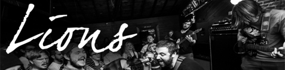
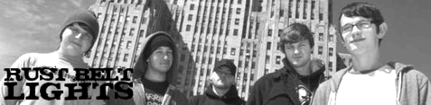
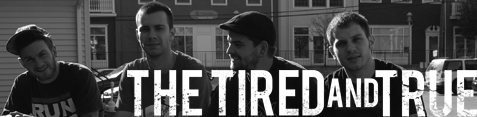
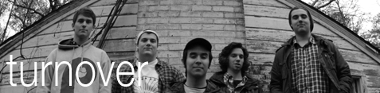

American Verse

The Boston area has never lacked a solid music scene. With bands like Transit, A Loss for Words and Four Year Strong all derived from the same area, it's no surprise American Verse is showing up on the map. American Verse is a 4 piece punk band from Worcester, Massachusetts which started in 2010. Since then they've done 3 east coast tours, self released a 5 song Demo in 2010, an EP in 2011 and an EP with Better Days records in 2012. Their first vinyl release in scheduled for this spring with Broken Rim Records.
https://www.facebook.com/americanverse
http://twitter.com/americanverse
Forever Young
Forever Young is a high energy pop punk band from St. Louis. Breaking away from the "positive" wave of pop punk, their songs consist of emotionally bitter sweet lyrics and melodic guitar riffs. Heavily influenced by bands like Saves The Day and Brand New, the band delivers an exciting and fun live show. Forever Young's debut full-length, "Out On A Limb", will be released October 2nd 2012 on Broken Rim Records.
https://www.facebook.com/ForeverYoungIL
http://foreveryoungil.bandcamp.com/
Great Collapse

LA-based political punk rock super-group Great Collapse (comprised of current and ex members of Strike Anywhere, Comeback Kid, Rise Against, and Set Your Goals). Great Collapse is frontman Thomas Barnett (Strike Anywhere), bassist Joe Saucedo (Set Your Goals), drummer Todd Henning (ex Death By Stereo) and guitarists Chris Chasse (ex Rise Against) and Tom Arnott (At Risk/Love Equals Death).
I Call Fives
Described as "hyper-catchy and highly caffeinated" by the Philadelphia Weekly, I Call Fives has become known for their high-energy sound and relentless stage presence. Identified as front-runners in the next generation of pop-punk, the band is ready to take charge of the opportunity to assert themselves against the backdrop of the ever-exploding New Jersey scene by presenting audiences with straight-forward, feel-good pop-punk.
Since their formation in 2006, I Call Fives has been extending their horizons beyond the East Coast, hitting stages in 33 states across the country on a rigorous touring schedule. In addition to aiding their notoriety, their journey has led to successful sales their debut 2008 EP First Things First, despite the band offering the album for free across the Internet. First Things First has been highly acclaimed, earning the band multiple spots on Distortion Radio's top 100 Songs of 2008, among other accolades.
Kicking off 2010, I Call Fives returned to Baltimore, MD to record their second EP, Bad Advice, for No Sleep Records with Kory Gable of Pin Up Recordings. With this new release and non-stop touring to follow, 2010 will surely be the biggest year yet for I Call Fives.
https://www.facebook.com/icallfives
http://www.myspace.com/icallfives
Ivy League, TX
Ivy League TX is a 3 piece punk band from Texas boarding on the out skirts of punk, hardcore, and grunge finding a unique sound of their own. Touring the US with acts such as Maker and Turnover, Ivy League TX is making a name for themselves. A self-released EP, to a full length on 6131 records, Ivy League TX's next release is a split 7" on Broken Rim Records.
Lions
Lions is based out of Knoxville, TN and has been releasing music and touring through DIY channels and families since late 2012. The four members of Lions prefer more out of the box approaches to write sporadic, clever, and often temperamental music alike stream of consciousness thought. They often utilize guitars, bass, drums, and singies to craft songs about the reexamination of the more visceral aspects of relationships and circumstance and plagues of the self. Lions does not feel at home in any one genre and would rather spend more time concerned where the next shoulder to shoulder house show, yelling worries away, will be hosted.
Maker
Taking equal parts urgency and angst, Maker has been weaving forceful and undeniably catchy songs for the better part of 6 years now. Maker has been known for their relentless touring prowess and is poised to finally create their own niche of Indie infused pop-punk and become a staple in the music scene. Maker is looking to be sure that anyone and everyone will hear what they have to say. With some self-released earlier stuff, to a split with The Story So Far on Pure Noise, to a full length on 6131, and then an EP on Black Numbers, Maker's next release is a 4-Way split on Broken Rim Records this spring.
Perspective, a lovely hand to hold
The name can be a little misleading. The band's songs are filled with bitter lyrics and mathy guitar riffs. Falling somewhere between indie rock and emo these 4 dudes from Nashua, NH have made a name for themselves. Self-releasing their debut LP and teaming up with Broken World Media and Broken Rim Records to bring you the follow up EP "Play Pretend."
Bandcamp
Placeholder
Since they started in 2011, Placeholder has been on multiple US tours with no plans of slowing down. With a unique sound that has been described as "Nirvana meets Hot Water Music," Placeholder is not a band to sleep on. After a name change and a lineup change, Placeholder has established a fan base with plans for their first vinyl release this fall on Broken Rim Records.
https://www.facebook.com/PlaceholderPA
http://placeholderpa.bandcamp.com/
Post Season
Post Season hails from Altoona, PA and is made up of Jake Langley, founding and recently departed member of Handguns, and four existing members of Altoona Pa based pop punk band Nothing To Prove. The lineup is as follows Dan Tippery on lead vocals, Shawn Dearmitt on lead guitar and backing vocals , Jake Langley on rhythm guitar, Chris Wills on bass and Jared Middleton on drums.
When Langley joined, Nothing To Prove decided they wanted to changed their name and then released a first single entitled "To Infinity & Beyond" produced and engineered by Sadie & Kory Gable along with Carl & Travis Hill. Since that time Langley has moved in with lead singer Dan Tippery in Altoona and the band has written loads more songs and recorded two more tracks at The Looking Glass (Gable, Hill) in Atlanta GA.
http://www.facebook.com/postseasonpa
http://postseasonband.bandcamp.com/
Rust Belt Lights
Formed in late 2008 as a collaboration of members from Dead Hearts, Daggermouth, and Get Back Up, the band played their first show in March 2009. They self released their demo at the show, which later became a well received 7" EP on State of Mind Recordings called "Long Gone...". After a good initial reception in the Buffalo area and some national interest over the internet, the band has since toured throughout the US and Eastern Canada.
https://www.facebook.com/rustbeltlights
http://www.myspace.com/rustbeltlights
sports.
sports. is a three-piece rock band from Boston, MA that blends the high energy of punk with emo inspired guitar riffs and pop hooks. After forming during the summer of 2013, the group began playing shows in and around the Boston area starting late that same year. The band self-released their debut EP "We'll Get to it Eventually" in March of 2014. Since then they've released a split with When All We Love Is Lost and most recently they self-released their first full-length record demon daze in August of 2015. "demon daze" will see a vinyl release - a first for the band - in early 2016 via Broken Rim Records followed by a 3-way split that's due out during Spring 2016, which is to be co-released by Broken World Media and Broken Rim Records.
Such Gold
Such Gold is a melodic hardcore/punk band from Rochester, New York. Such Gold formed officially in 2009, and self-released "Demo 2009" in the Spring of that year. Such Gold has toured the US extensively, have toured in Australia, Japan, UK/EU, Canada and Costa Rica, and have played a number of festivals including The Fest, Sound and Fury, Bled Fest, SXSW, Blood Sweat and Beers and Groezrock.The band signed to Razor & Tie records in July 2011 where they released their first full-length album, "Misadventures". Look forward to an exclusive song from the 4-Way Split with Turnover, Maker and Ivy League TX on Broken Rim Records in the Spring of 2014.
Threads

Since forming in late 2013, Threads have already covered some ground in their first year. After self-releasing an EP and booking multiple DIY tours, Threads is teaming up with Broken Rim Records to release their debut full length "All I"ve Ever Known." The band falls somewhere in between genres of screamo and melodic hardcore. With their short powerful songs they could be compared to bands like Touche Amore or Verse. Be sure to check out one of West Virginia's fastest upcoming bands.
Bandcamp
The Tired and True
Signed to Eulogy Records straight from their debut release, The Tired and True is not a band to sleep on! Their lyrics are easily related to, singing about break-ups and home town blues. The band has toured the US multiple times and is on the road more than they are home. The energy behind their songs is nothing shy of classic albums such as "Through Being Cool" and "Four Minute Mile."
https://www.facebook.com/thetiredandtrue
http://thetiredandtrue.bandcamp.com/
Turnover
Turnover is a fast and to the point, punk band based out of Virginia Beach. Their debut self titled EP consists of 5 songs, totaling at just under fourteen minutes. With honest lyrics, and simple but catchy riffs, the EP is solid beginning to end. Turnover is sure to be one of this year's best upcoming bands.
http://www.facebook.com/Turnover
http://twitter.com/turnoverva
The Weeds
The Weeds, featuring former members of Transit and Late Nite Wars, came together in August of 2012. The band teamed up with David Conway of Working Group Management (Man Overboard, Allison Weiss) to release their first EP through Conway's new label, Cat Skull Records. The Weeds recorded their debut EP, Roots/Routes, with Mike Moschetto (Aviator, Long Lost) at The Office Recording Studio for four days in December 2012. On February 26, 2013, Roots/Routes became available and exclusively distributed through No Sleep Records (digital and a limited number of 300 cassettes). Now, one can find the band's EP on the band's bandcamp, soundcloud, and spotify. The EP will be released on a limited 10" vinyl via Broken Rim Records.
Bandcamp